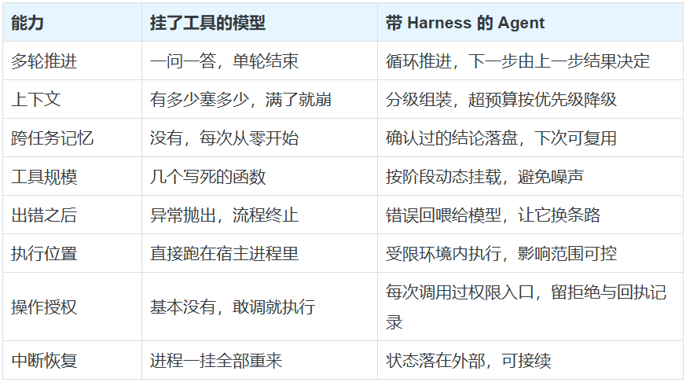
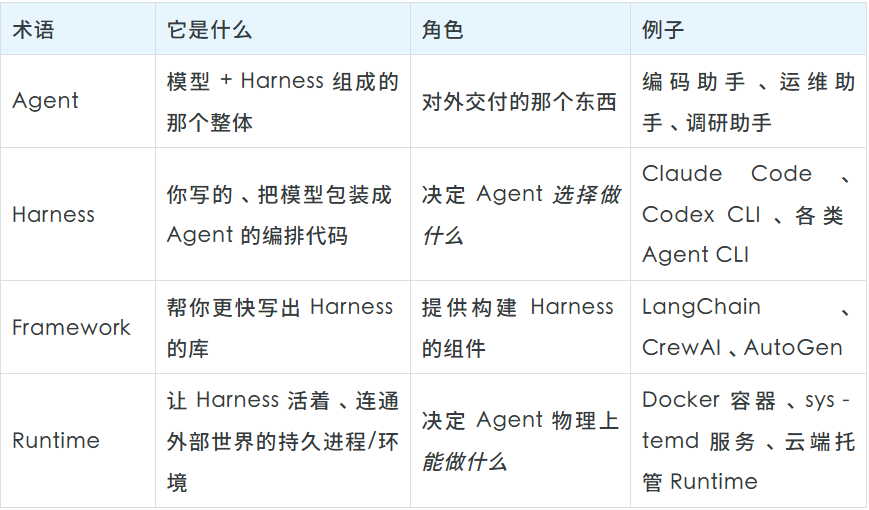
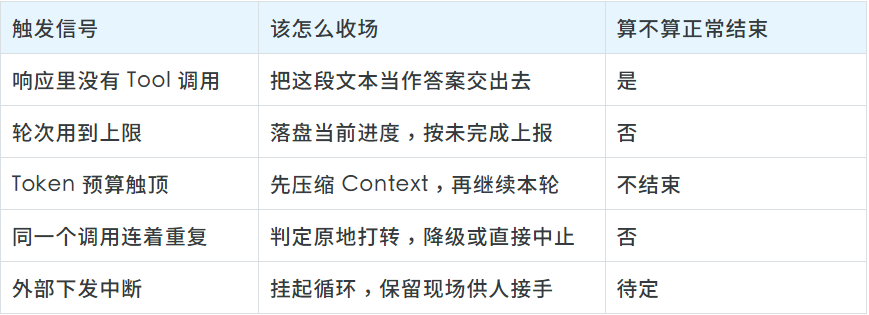
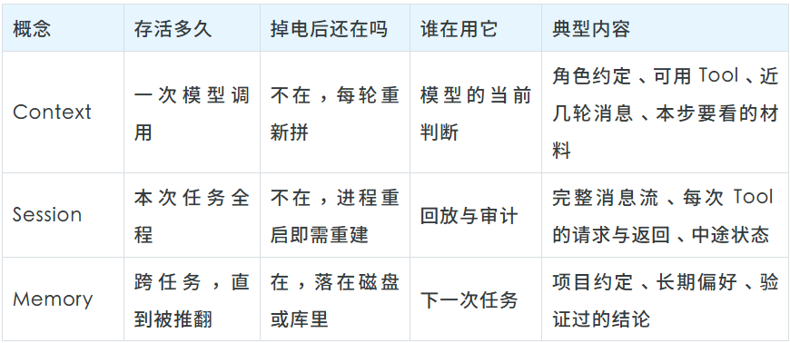
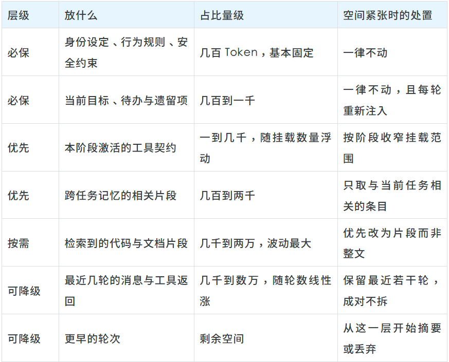
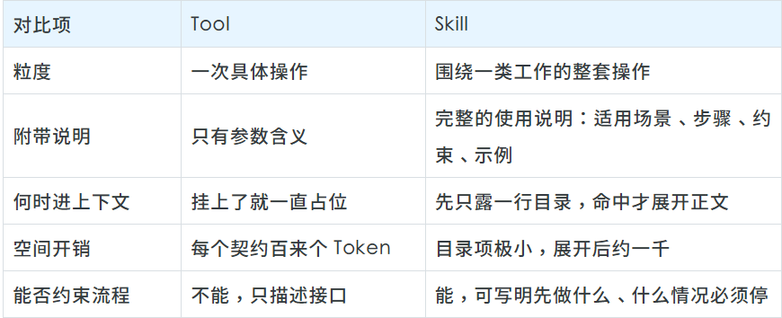
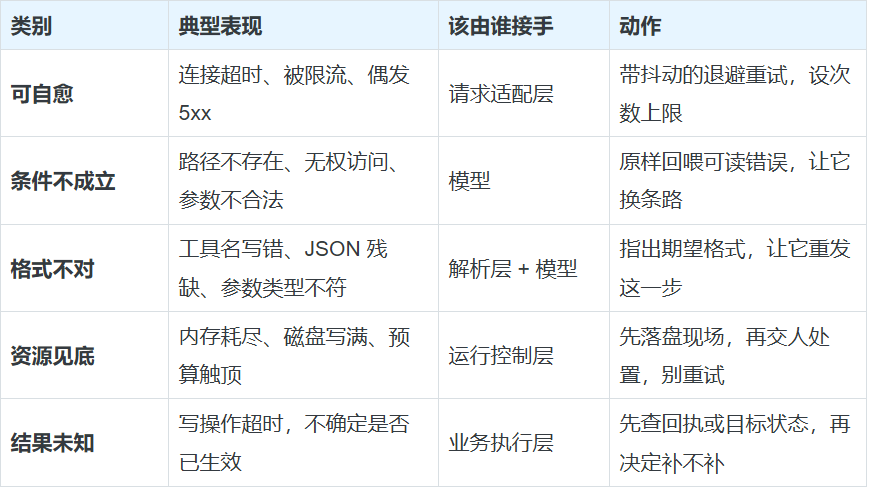
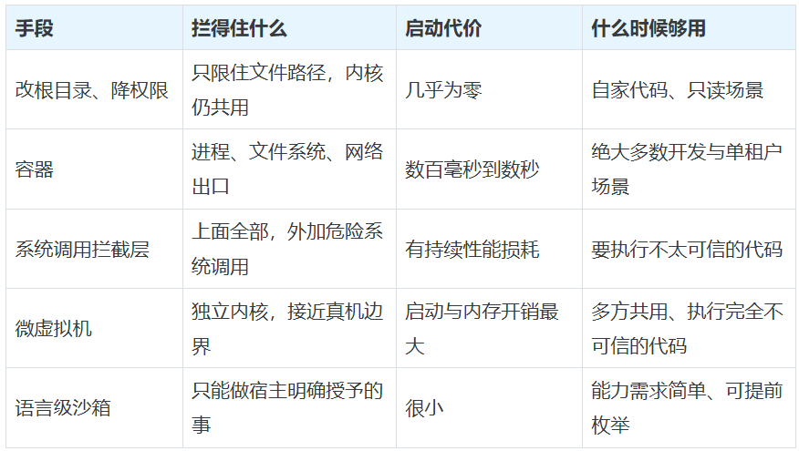
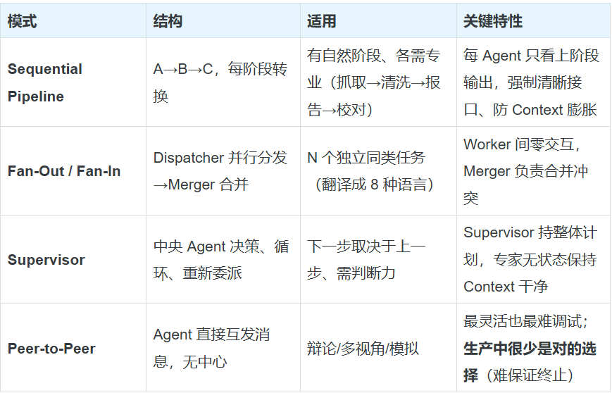
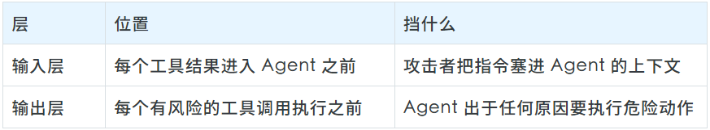

换一套 Harness，比换两代模型还管用（腾讯云开发者 Agent Harness 综述）
换一套 Harness，比换两代模型还管用（腾讯云开发者 Agent Harness 综述）
来源：微信公众号 归档日期：2026-09-18 抓取状态：成功 原文字符：55845｜配图：22 张
摘要速览
- 真正决定 Agent 高下的是模型之外的 Harness 层——这一轮让模型看到什么、工具怎么暴露与执行、失败怎么回喂、任务断了怎么接上、凭什么算做完。
- 同一模型同一套题，换 Harness 完成率差十几二十个百分点，常比两代模型差距还大。
- 全文结构：一个循环→四个子系统→生产化→长时运行→评测→选型，可作为判断市面 Agent 产品含金量的选型清单。
- 厘清 Agent/Harness/Framework/Runtime 四词层次：模型定上限，Harness 定实际拿到多少。
- 给出三条入门直觉与可照着改的代码骨架。
核心内容
原文正文抓取失败，基于收件箱摘要归档，待补充原文。
- 层次模型：模型（上限）→ Harness（实际发挥）→ Framework（组织方式）→ Runtime（执行环境）。
- Harness 四子系统对应五个关键问题：上下文供给、工具暴露与执行、失败回喂、断点续跑、完成判定。
- 选型视角：评估 Agent 产品时对比 Harness 工程而非只看底座模型名。
可执行启发
- 先审计自家 Agent 的 Harness（上下文/工具/回喂/续跑/完成判定五项），再考虑换模型。
- 对比两个产品时把「同模型下完成率差异」作为 Harness 质量的直接度量。
归属：[[02-输入/按主题/工具与技术/_index|工具与技术]]
我的想法
（待补充）
原文沉淀
目录
- 楔子：瓶颈已经不在模型那一侧
- 三个从一开始就要建立的直觉
- 01
- 1.1 Harness 的本质，就是一个循环
- 1.2 简单的循环，与让它达到生产级的边界处理
- 1.3 上手写一个：把四块拼起来就是个 Harness
- 02
- 2.1 子系统 1：Tool 系统——Agent 的双手
- 2.2 子系统 2：Memory 与 Context——杠杆最高的地方
- 组装：一个带优先级的装箱问题
- 压缩：空间不够时，按什么顺序让位
- Memory：两级结构
- 2.3 子系统 3：Guardrails——模型和真实世界之间的裁决者
- 2.4 Skill 系统——薄 Harness + 厚 Skill
- 03
- 3.1 错误处理：失败也是一种观察
- 3.2 Sandbox：把影响范围圈死
- 3.3 多 Agent 编排：单 Agent 的三面墙
- 3.4 定时任务与自动化：从「叫它才动」到「自己会动」
- 04
- 4.1 长时运行 Harness：失败是隐蔽的
- 4.2 托管式架构：把判断、执行、记录三者拆开
- 05
- 5.1 基础设施噪声：多给一个核，排行榜就换了名次
- 5.2 被测觉察：Agent 察觉到这是考场之后
- 5.3 用模型来审批：从「每次都问人」到「机器先过一遍」
- 双层防御：入口和出口各设一道
- 成本问题：绝大多数动作不该走到审核模型
- 最关键的一个设计：不让它看 Agent 的推理
- 06
- 参考来源
关注腾讯云开发者，一手技术干货提前解锁👇

开发者公众号专属群聊
扫码加入获取更多一手教程、科技前沿报告
一匹马能跑多快是天生的，但这份马力能不能用在该用的方向上、该收的时候收住，靠的是那副马具。harness 本义就是马具——套在马身上、把马力传导到车上的那整套装备。放到 Agent 上，它指的是模型之外那一层代码：这一轮让模型看到什么、它提出的操作准不准执行、失败怎么回喂、任务断了怎么接上、最后凭什么说事情做完了。 全文按「一个循环 → 四个子系统 → 生产化 → 长时运行 → 评测 → 选型」展开。读完你大概能看出市面上多数 Agent 产品里，哪些部分是模型给的，哪些部分是有人一行行写出来的。
关于本文的性质： 这是一篇综述。近一两年，关于「怎么把一个大模型工程化成真能干活的 Agent」，好东西散落在各处——模型厂商的工程博客、几份系统化的中文教程、把 Agent 当循环来工程化的系列文章，以及大量开源 Harness 项目自己的文档。本文做的事是把这些来源里反复被验证的判断抽出来、去掉重复、串成一条主线，用统一的语言和例子重讲一遍，并补上可以照着改的代码骨架。它不隶属于任何单一来源；观点有取舍时，以「工程上是否站得住」为准。具体出处见文末「参考来源」。
楔子：瓶颈已经不在模型那一侧
主流模型在编码、办公、检索类 benchmark 上大多已经能拿到不错的分数，单看模型，各家的差距在收窄——今天某家领先半个身位，过一阵就被追平。于是真正分出高下的地方发生了转移：不再是「你接了哪家模型」，而是「你把这份能力组织成了什么」。
这件事在评测里看得最直观。同一个模型、同一套题，换一套 Harness 去跑，完成率能差出十几二十个百分点，而这个差值常常比两代模型之间的差距还大。原因也不神秘：换 Harness 等于换了一整套隐藏配置——步数上限给多少、工具怎么暴露、超长的工具返回是截断还是摘要、上下文满了先牺牲谁。这些没有一项属于模型能力，但每一项都在改分数。
所以这篇文章讲的不是模型，而是模型外面那层工程：怎么组装上下文、怎么管记忆、怎么设计工具、怎么守住执行边界、怎么让一个任务稳定跑完几小时甚至几天。
顺便厘清一个概念的漂移。前两年说「Agent」，多数时候指的是模型接了个工具——挂一个搜索接口就敢这么叫。而现在讨论的 Agent 要做的事是另一个量级：自己摸索一个陌生代码库、跨文件定位问题、改完跑测试验证、最后把结果和证据一起交出来。这两者的差距，几乎全部落在模型之外：

一句话：模型决定这套系统的上限，Harness 决定你实际能拿到多少。
四个最容易混淆的词：Agent Harness Framework / Runtime
###
这几个词经常被混着用，但它们处在不同层次，分清楚能省掉后面很多困惑：

Agent 是那个成品，另外三个是它的组成与支撑：Framework 帮你造 Harness，Runtime 托管 Harness，Harness 决定 Agent 的行为，而 Agent 是用户最终看到的整体。 Runtime 决定它物理上能不能读某个文件、能不能联网，Harness 决定它会不会去读、会不会去联。
顺带说一句用词习惯：后文讲「Agent 读到了什么」「Agent 不该独自验收自己」时，主语仍写 Agent——那是从外部看这个系统的说法；但每一次真正要落地的决定，都发生在 Harness 这一层。
三个从一开始就要建立的直觉
###
在深入之前，先记住三条贯穿全文的常识，它们能帮你避开相当多的弯路：
- 把模型问题误判成 Harness 问题（或反过来）。 Agent 出错时，绝大多数时候不是模型"变笨了"，而是 Context 出了问题（加载了错误的文件、缺了关键指令）或 Tool 出了问题（Schema 写错、静默报错）。先怀疑管道，再怀疑模型。
- 一上手就想把架子搭全。 合理的顺序是倒过来的：先跑通最小循环，出现跨任务复用需求再引入 Memory，工具膨胀到模型挑不清了再引入 Skill，真要对外承担后果了再补 Guardrails 和 Sandbox。提前铺开一堆基础设施，等于在为还没出现的问题写代码。
- 默认 Context 装得下。 模型的判断只建立在这一轮实际收到的内容上——磁盘里有、上一轮说过、数据库里存着，都不代表它这一轮看得见。这条会贯穿全文反复出现。
01
第一部分 · 一切的起点：Agentic Loop
1.1 Harness 的本质，就是一个循环
一个 Harness 无论最后长到多大——几十行的实验脚本也好，一个成熟的编码 Agent 也好——剥到最里面都是同一段结构：模型判断下一步要什么，程序执行获准的操作，把结果写回上下文，模型再判断。这个「边想边做」的模式一般追溯到 ReAct（Reason + Act，推理 + 行动）：推理决定下一个动作，动作带回的观察又修正后续推理，如此往复，直到不再需要工具或者被外部条件叫停。
- - - - - - - - - - - - - - - - - - - - -
┌──────────────┐
┌────────►│ Reason │ 模型推理（一次 LLM 调用）
│ │ (LLM call) │
│ └──────┬───────┘
│ │
│ ▼
│ ┌──────────┐ 没有工具调用 ┌──────────┐
│ │ Tools? ├───────────────►│ Output │ 返回最终文本，结束
│ └────┬─────┘ └──────────┘
│ │ 有工具调用
│ ▼
│ ┌──────────┐
│ │ Execute │ 执行工具（可并行）
│ │ tools │
│ └────┬─────┘
│ │
│ ▼
│ ┌──────────┐
└──────────┤ Observe │ 把工具结果喂回去，进入下一轮
(loop) │ results │
└──────────┘关键就是那条回环箭头。用 Python 写出来是这样：
- - - - - - - - - - - - - - - - - - -
def run_loop(history: list, toolset: list, turn_budget: int = 20) -> str:
"""一轮轮推进，直到模型不再要工具、只给文本。"""
for _ in range(turn_budget):
# ① 思考：一次模型调用
reply = model.invoke(context=history, toolset=toolset)
history.append(reply.message) # 先把它这一轮的发言记下来
# ② 出口：不再请求工具，说明它认为可以作答了
requests = reply.message.tool_calls
if not requests:
return reply.message.content
# ③ 执行并观察：结果逐条写回，失败也照样写回
for req in requests:
outcome = invoke_tool(req)
history.append(as_tool_message(req, outcome))
# 回到 ①——模型带着新结果重新判断
raise TurnBudgetExhausted(f"{turn_budget} 轮内未收敛")思考 → 执行 → 观察 → 重复。 就这么简单。判断一个系统是不是真的在跑循环，标准不在于有没有接工具，而在于工具返回的结果会不会改变它后面的动作。接一次搜索、拿到结果直接作答，那还是问答；看完结果决定再打开某个页面、核对来源、换个关键词重查，然后才组织答案——这才是循环。
1.2 简单的循环，与让它达到生产级的边界处理
循环骨架很简单，真正把它推到生产级的，是围绕它的一堆边界处理。下面几条每一条都对应着一类线上事故：
** **
① 轮次上限绝对不能省。 这是最常见的一类事故源头。没有上限，一个陷入混乱的模型会一直转下去——同一个工具反复调、同样的错误反复撞，Token 和钱一起烧。它是最简单、也最不该缺席的那道闸。
② 光有上限还不够，要认出「在原地打转」。 有时模型会在预算之内反复做同一件无用功。判据很朴素：把最近几次调用的「工具名 + 参数」拿出来，如果连续几次完全一样，基本可以断定它卡住了，该降级或中止，而不是等预算耗完：
- - - - - - - - - - - - - - - -
STUCK_THRESHOLD = 3
def is_spinning(history: list) -> bool:
"""连续多次发出完全相同的调用，视为原地打转。"""
fingerprints = []
for msg in reversed(history):
calls = getattr(msg, "tool_calls", None)
if not calls:
continue
for c in calls:
fingerprints.append((c.function.name, c.function.arguments))
if len(fingerprints) >= STUCK_THRESHOLD:
break
latest = fingerprints[:STUCK_THRESHOLD]
return len(latest) == STUCK_THRESHOLD and len(set(latest)) == 1③ 工具错误必须回喂，不能静默吞掉。 如果一个 Tool 失败了却返回空字符串或悄悄崩掉，模型会以为成功了，继续往下走，甚至幻觉出一个成功的结果。正确做法是把错误信息（类型 + 描述）作为 Tool 结果返回，让模型看到并调整策略。
④ 大输出先处理再追加。 一个整文件、一个完整的 API 响应，动辄几千上万 Token，直接追加会迅速撑爆 Context 窗口。追加前要截断或摘要。
⑤ 并行 Tool 调用。 现代 API 支持模型在一次响应里请求多个 Tool。需要读三个文件的模型会同时请求三个，而不是排队。这不只是优化——如果你的循环把并行调用强行按顺序处理，可能会引入本不存在的顺序依赖，改变 Agent 行为。
⑥ 流式输出。 循环转起来之后，模型的响应最好逐 Token 推给前端。这不只是体验问题——长任务里，能看见它当前在做什么，用户才有判断「要不要打断」的依据；一片空白的等待里，人唯一能做的选择只有关掉。
退出条件也不止"没有工具调用"这一种，一张表说清：

1.3 上手写一个：把四块拼起来就是个 Harness
理解循环最好的方式是亲手写一个。下面用一个"便签助手"作例子——两个工具 save_note（存便签）和 find_notes（关键词检索）。去掉注释和示例数据，核心逻辑不过几十行。它由四块构成：
- - - - - - - - -
┌────────────────────────────────┐
│ System Prompt │ ← Agent 的身份定义
├────────────────────────────────┤
│ Tool Definitions │ ← 能做什么（JSON Schema）
├────────────────────────────────┤
│ Tool Execution │ ← Tool 实际执行逻辑
├────────────────────────────────┤
│ Tool Loop │ ← 循环：思考 → 执行 → 观察
└────────────────────────────────┘- System Prompt 划定角色和边界。这部分的投入产出比高得不成比例——一句话的增删，行为就可能整体偏移。
- Tool 定义 是给模型看的 JSON Schema。它读不到你的 Python 实现，眼里只有名称、描述和参数结构。 这道隔断是后面很多设计的前提。
- Tool 执行 是落地干活的那段代码。模型吐出结构化 JSON，你负责解析并真的去执行。
- Tool 循环 负责调度：发起模型请求、看有没有工具调用要执行、执行完把结果送回去，如此往复，直到模型不再要工具、只给文本。
完整代码（pip install openai + 设好 OPENAI_API_KEY 就能跑）：
- - - - - - - - - - - - - - - - - - - - - - - - - - - - - - - - - - - - - - - - - - - - - - - - - - - - - - - - - - - - - - - - - - - - - - -
#!/usr/bin/env python3
"""便签助手：一个最小 Agent Harness。运行：python note_agent.py"""
import json
from openai import OpenAI
llm = OpenAI()
MODEL_NAME = "gpt-4o-mini" # 便宜够用，学习阶段首选
TURN_LIMIT = 15
NOTES: dict[str, str] = {} # 用内存字典当"存储层"，聚焦讲循环本身
# --- ① 身份 ---
PERSONA = (
"你是一个便签管家。可以帮用户保存便签、按关键词检索。"
"涉及便签操作时，务必调用提供的工具，不要凭空编造内容。"
)
# --- ② 工具 Schema：模型唯一能看到的接口 ---
TOOL_SPECS = [
{"type": "function", "function": {
"name": "save_note",
"description": "保存一条便签，返回它的编号",
"parameters": {"type": "object", "properties": {
"title": {"type": "string", "description": "便签标题"},
"body": {"type": "string", "description": "便签正文"}},
"required": ["title", "body"]}}},
{"type": "function", "function": {
"name": "find_notes",
"description": "按关键词检索便签，返回命中的标题列表",
"parameters": {"type": "object", "properties": {
"keyword": {"type": "string"}},
"required": ["keyword"]}}},
]
# --- ③ 工具实现：模型看不到这段 ---
def call_tool(name: str, kwargs: dict) -> str:
try:
if name == "save_note":
note_id = f"n{len(NOTES) + 1}"
NOTES[note_id] = f"{kwargs['title']}\n{kwargs['body']}"
return f"已保存，编号 {note_id}"
if name == "find_notes":
kw = kwargs["keyword"]
hits = [f"{nid}: {txt.splitlines()[0]}"
for nid, txt in NOTES.items() if kw in txt]
return "\n".join(hits) if hits else f"没有匹配 “{kw}” 的便签"
return f"错误：未知工具 {name}"
except Exception as exc:
return f"错误：{exc}" # 出错也返回字符串，交给模型判断
# --- ④ 循环：思考 → 执行 → 观察 ---
def chat(user_text: str) -> str:
history = [{"role": "system", "content": PERSONA},
{"role": "user", "content": user_text}]
for _ in range(TURN_LIMIT):
reply = llm.chat.completions.create(
model=MODEL_NAME, messages=history, tools=TOOL_SPECS)
turn = reply.choices[0].message
history.append(turn) # 关键：先把 assistant 回合入历史
if not turn.tool_calls: # 不再调用工具 → 收尾
return turn.content
for tc in turn.tool_calls: # 执行本回合请求的所有工具
out = call_tool(tc.function.name, json.loads(tc.function.arguments))
history.append({"role": "tool",
"tool_call_id": tc.id, "content": out})
return "已达最大回合数，提前退出。"
if __name__ == "__main__":
print("便签管家已就绪（输入 q 退出）")
while (line := input("\n> ").strip()) not in ("q", "quit"):
print(chat(line))想加第三个工具（比如删除便签）？只需加一个 Tool 定义和一个处理分支，循环一行都不用改，模型会自动发现并使用新工具：
- - - - - - - - - - -
# 加进 TOOL_SPECS 列表：
{"type": "function", "function": {
"name": "delete_note",
"description": "按编号删除一条便签",
"parameters": {"type": "object",
"properties": {"note_id": {"type": "string"}}, "required": ["note_id"]}}}
# 加进 call_tool()：
if name == "delete_note":
nid = kwargs["note_id"]
return f"已删除 {nid}" if NOTES.pop(nid, None) else f"编号 {nid} 不存在"想换模型？Harness 是模型无关的——把 client 换成另一家的，Schema 字段做个映射即可，同样的循环、同样的工具照跑：
- - - - - - - - - - -
from anthropic import Anthropic
llm = Anthropic()
reply = llm.messages.create(
model="claude-sonnet-4-20250514", max_tokens=4096,
system=PERSONA, messages=history,
tools=[{"name": s["function"]["name"], # 字段名不同，做个映射
"description": s["function"]["description"],
"input_schema": s["function"]["parameters"]} for s in TOOL_SPECS])
for block in reply.content:
if block.type == "tool_use":
out = call_tool(block.name, block.input)新手最常踩的三个坑，每一个都值得刻在脑子里：
- 漏掉 assistant 那条消息。 工具结果写回去之前，要先把模型那一轮的响应本身放进
history，否则它下一轮不知道这个结果对应自己提过的哪个请求。
- 结果类型没转。 工具结果要以字符串形态回填，返回 dict 得先
json.dumps()；直接塞 Python 对象过去会直接报错。
- 没有迭代上限。 见上面的
TURN_LIMIT。
从这个 50 行脚本到生产级 Harness，缺的东西是：Memory（无状态 → MEMORY.md + 每日日志）、Context 管理（完整历史 → 优先级窗口化）、错误恢复（基础 try/catch → 重试 + 升级）、安全（无 → Sandbox）、Tool 加载（一次性全加载 → 按需 Skill）。这些正是后面几部分的主题。
02
第二部分 · 四大子系统
不论怎么实现，一个 Harness 都由四个子系统拼成。Agentic Loop 是第一个（上面讲透了），剩下三个是 Tool 系统、Memory & Context、Guardrails，再加上一个把它们优雅组织起来的 Skill 系统。
- - - - - - - - - -
┌──────────────────────────────────────────────┐
│ HARNESS │
│ ┌──────────┐ ┌──────────┐ ┌────────────┐ │
│ │ Agentic │ │ Tool │ │ Memory & │ │
│ │ Loop │ │ System │ │ Context │ │
│ └──────────┘ └──────────┘ └────────────┘ │
│ ┌────────────────────────────────────────┐ │
│ │ Guardrails │ │
│ └────────────────────────────────────────┘ │
└──────────────────────────────────────────────┘2.1 子系统 1：Tool 系统——Agent 的双手
模型负责推理（大脑），Tool 负责执行（双手）。这里有个根本性的分离：模型看到的是 Schema（名字、描述、参数类型），Harness 负责执行（真正调用函数、返回结果）。模型永远看不到、也不执行实现代码。
- - - - - - - - - - - - - - -
# 模型看到的（tool schema）
{
"name": "get_weather",
"description": "查询某城市的当前天气",
"parameters": {
"type": "object",
"properties": {"city": {"type": "string", "description": "城市名，如 上海"}},
"required": ["city"]
}
}
# Harness 执行的（tool implementation）——模型看不到这段
def get_weather(city: str) -> str:
resp = requests.get(WEATHER_API, params={"q": city, "key": API_KEY})
return f"{city}：{resp.json()['now']['text']}，{resp.json()['now']['temp']}℃"这个分离意味着：你可以在模型完全不知情的情况下修改 Tool 实现、限制 Tool 行为、加权限检查。它是 Guardrails 能够存在的前提。
Tool 系统的中枢是 Tool 注册表，负责把名字映射到 Schema 和实现，并对外提供 get_schemas()（给 LLM API 调用用）和 dispatch()（执行工具调用）。注意一个关键细节——dispatch 即使出错也永远返回字符串：
- - - - - - - - - - - - - - - - - - - - - - - - - - - - - - - - - - - - -
from dataclasses import dataclass
from typing import Callable
@dataclass
class Tool:
name: str
description: str
parameters: dict # JSON Schema
handler: Callable # 实际实现
class ToolRegistry:
def __init__(self):
self._tools: dict[str, Tool] = {}
def register(self, tool: Tool):
self._tools[tool.name] = tool
def get_schemas(self) -> list[dict]:
"""给 LLM API 用——只暴露 Schema，不暴露实现。"""
return [{"type": "function", "function": {
"name": t.name,
"description": t.description,
"parameters": t.parameters}}
for t in self._tools.values()]
def dispatch(self, name: str, arguments: dict) -> str:
"""执行工具调用——永远返回字符串，出错也不例外。"""
tool = self._tools.get(name)
if not tool:
return f"Error: Unknown tool '{name}'"
try:
result = tool.handler(**arguments)
return result if isinstance(result, str) else json.dumps(result)
except TypeError as e:
return f"Error: Invalid arguments for '{name}': {e}"
except Exception as e:
return f"Error: {type(e).__name__}: {e}" # 错误也返回给模型，不静默崩溃dispatch 的返回值直接作为 Tool 结果喂回模型——所以它必须永远是字符串。返回 dict 会让下游序列化崩溃，抛异常会中断整个循环。把错误当成给模型的一条信息，模型看到 Error: File not found: /x 就会自己去 list_dir 找正确路径。
Tool 系统设计的几条铁律，对 Agent 质量的影响甚至超过模型本身：
** **
① 描述质量决定一切。 模型能否正确用一个 Tool，几乎完全取决于描述质量。{"name": "search", "description": "Search for things"} 是灾难——模型只能瞎猜行为。好的描述要：说清 Tool 做什么（而非它是什么）、指明输出格式（JSON 纯文本 每行一个）、包含约束（最大结果数、大小限制）、对非直观参数给示例。
② 静态 vs 动态加载。 静态 Tool 启动时全加载，5-15 个还行，但 100 个 Tool 意味着每次 API 调用都带 100 个 Schema，既烧 Token 又让模型困惑（超过 ~20 个活跃 Tool，模型表现明显下降）。解法是动态加载：给模型一个能力菜单，它调 load_skill("git") 才加载 git 相关工具。一个菜单约 200 Token，一次性加载所有工具可能要 5,000+。
③ 组合优于复杂单体。 复杂能力来自简单 Tool 的组合，而非一个巨型 Tool。顺序（read → edit → run_tests）、扇出（并行读 5 个文件再综合）、条件分支、迭代（test → edit → test 直到通过）——这些模式模型会通过循环自然发现，你只要提供正确的原子 Tool。
④ MCP（Model Context Protocol） 是一个开放标准，通过 stdio / HTTP SSE 等传输层向 Agent 暴露工具，把工具实现与 Harness 解耦。为一个 Harness 写的工具，能在任何兼容 MCP 的 Harness（Claude Desktop、Cursor、各类 Agent CLI…）里复用，解决了 N×M 的集成问题。
四个高频坑：同时加载太多工具、静默失败（返回空串让模型瞎猜）、缺失 Tool 结果（忘了追加导致 API 调用失败）、返回类型不一致（时而内容时而 error dict，模型无法可靠解析）。
2.2 子系统 2：Memory 与 Context——杠杆最高的地方
先把三个天天被混淆的概念钉死：

三者的分工可以这样记：Context 是模型此刻的工作台，Session 是这趟任务的完整流水，Memory 是任务散场后还值得留下的那部分。
Context 工程是整个 Harness Engineering 里杠杆最高的活——比选模型、调 Prompt、设计 Tool 都重要。原因就是那条铁律：模型不知道你没告诉它的事。 关键信息没组装进 prompt，对模型来说就不存在。Context 工程有三大支柱：组装（放什么进去）、压缩（缩减什么）、预算（如何分配容量）。
组装：一个带优先级的装箱问题
####
128K Token 听起来很大，但一个大文件吃掉 10K、二十个 Tool Schema 吃掉 3K、对话历史每轮线性增长，一个复杂任务跑十几轮就开始做艰难取舍了。优先级系统决定空间紧张时谁能存活（数字越小优先级越高）：

直观地看，一个 128K 的 Context 窗口就像一个从底往上装、上限固定的箱子——高优先级的先进去、稳稳占住底部，低优先级的塞在上面、空间不够时最先被挤出去：
- - - - - - - - - - - - -
Context 窗口（如 128K Token）
┌─────────────────────────────────┐
│ [Reserve] 回复预留 (~4,000) │ ← 必须留空，否则模型没地方回话
├─────────────────────────────────┤
│ 更早对话 (剩余) │ ← 优先级最低，最先被压缩/丢弃 ▲ 先出
│ 近期对话 (~varies) │ │
│ 注入文件 AGENTS.md… (~5,000) │ │
│ Memory 摘要 (~1,000) │ │
│ 任务指令 (~500) │ │
│ Tool Schema (活跃) (~2,000) │ │
│ System Prompt (~500) │ ← 优先级最高，永远保留 ▼ 后出
└─────────────────────────────────┘
组装器从高优先级往低填，装满即止；关键段落(≤2)宁可截断也不整段丢组装器代码就是按优先级排序、逐个装入、超预算即停：
- - - - - - - - - - - - - - - - - - - - - - - - -
@dataclass
class ContextBlock:
priority: int # 越小越优先
content: str
tokens: int
def assemble_context(blocks: list[ContextBlock],
max_tokens: int = 128_000,
reserve: int = 4_000) -> str:
"""按优先级组装 Context，为模型回复预留 reserve 空间。"""
budget = max_tokens - reserve
used = 0
selected = []
for block in sorted(blocks, key=lambda b: b.priority): # 高优先级先进
if used + block.tokens <= budget:
selected.append(block)
used += block.tokens
elif block.priority <= 2: # 关键段落宁可截断也不整段丢
remaining = budget - used
if remaining > 100:
selected.append(ContextBlock(
block.priority, truncate(block.content, remaining), remaining))
used = budget
# 组装时按逻辑顺序（system 在前），而非按优先级
return "\n\n".join(b.content for b in sorted(selected, key=lambda b: b.priority))这里有两个容易忽视但至关重要的点。一是 reserve 参数——你得给模型的回复留出空间（比如 4K），否则 Context 塞到 100%，模型就没地方回话了。二是 Context 必须每一轮都重新组装（每轮调用 assemble_context），一次性组装后不更新，意味着第一次工具调用后模型就在用过时信息推理。
压缩：空间不够时，按什么顺序让位
####
对任何非平凡的 Session，压缩都不是可选项。算一笔账：128K 窗口，扣掉回复预留 4K、System Prompt 500、12 个 Tool Schema 2.4K、MEMORY.md 1.2K、AGENTS.md 0.8K，剩约 11.9 万给对话；而一个 50 轮含 Tool 结果的编码 Session 约 6 万 Token——不压缩的话大约第 35 轮就撞墙。三道防线：
- 自动衰减：只保留系统提示 + 最近 N 轮，丢弃窗口外的旧消息。最简单。
- 阈值压缩：总 Token 超过预算 70% 时触发，把较早的对话轮用一个便宜快模型摘要掉，同时保留最近几轮原文。
- 主动摘要：超长任务定期让模型打 Checkpoint——总结关键决策、改了哪些文件、跑了什么测试、遇到什么错误、当前计划，控制在 500 词内。
生产环境最实用的是滑动窗口：最近几轮保持完整，窗口边界之前的全部折叠进一个滚动摘要。
Memory：两级结构
经过验证的 Memory 架构分两级：
- 第一级 · 每日日志（
memory/2026-04-15.md）：原始的、按时间顺序的事件记录，Session 中随手追加，不做精选。写起来成本极低。
- 第二级 · 长期 Memory（
MEMORY.md）：精选、提炼过的知识——用户偏好、项目知识、经验教训。定期更新（不是每个 Session），需要判断力（什么值得保留）。
Session 启动时读 Memory（长期 + 今天/昨天的日志），运行中随手写日志，定期整理 MEMORY.md。还有一个相关但不同的文件 AGENTS.md：它定义 Agent 应该如何行为（声明式：用 pytest、遵循 Google docstring、不改 /config），而 MEMORY.md 记录发生了什么（经验式）。两者都在 Session 启动注入，用途不同。四个坑：把 Context 当无限、从不裁剪历史、写 Memory 太频繁（产生噪音稀释有用信息）、启动时忘了读 Memory（Agent 就成了失忆症）。
2.3 子系统 3：Guardrails——模型和真实世界之间的裁决者
缺了 Guardrails 的 Agent，risk 全押在「它不会乱来」这个假设上。而模型是照着指令办事的——问题在于，它读到的网页、issue、日志里也可能夹着指令。
逻辑链条是这样的：模型生成文本 → 文本里包含 Tool 调用 → Harness 执行这些调用。这意味着任何能影响模型输出的东西，都能影响 Harness 的行为——包括文件、网页、用户消息里的恶意内容。这就是 prompt 注入：攻击者把指令藏进 Agent 会读到的数据里，模型把它当成任务去执行——删文件（rm -rf /）、偷环境变量里的 API key、在宿主机执行任意代码、以用户身份发未授权消息。
最关键的认知：在 prompt 里写"不要删文件"不是 Guardrail，那只是一句建议，一次 prompt 注入就能覆盖它。真正的 Guardrail 在代码里执行，是一层拦在模型和执行环境之间的权限层。它拦截每个 Tool 调用，在执行前做四选一：
- - - - - - - - - - - - - - -
模型侧（不可信）
┌──────────────────────────────┐
│ 模型推理 + 发起工具调用请求 │
└──────────────┬───────────────┘
│ 请求：save_note(...) / run_shell(...)
▼
┌──────────────────────────────┐
│ ★ 权限闸门（代码，非文本）★ │ 放行 / 拦截 / 改写 / 转人工
└──────────────┬───────────────┘
│ 仅放行经审核的调用
▼
执行侧（真实副作用）
┌──────────────────────────────┐
│ 文件系统 · 网络 · Shell │
└──────────────────────────────┘- 允许：按请求执行。
- 拒绝：返回错误给模型。
- 改写：放行但收紧参数（例如把写入位置强行钉在允许的目录内）。
- 询问：执行前请求人类批准。
关键是在 dispatch 之前插入一道检查，让 Guardrail 用代码而非文本裁决：
- - - - - - - - - - - - - - - - - - - - - - - - - - - - - -
from enum import Enum
class Decision(Enum):
ALLOW = "allow"; DENY = "deny"; MODIFY = "modify"; ASK = "ask"
def check_permission(tool_name: str, args: dict) -> tuple[Decision, str]:
# 1) 破坏性 Shell 命令：直接拒绝
if tool_name == "run_shell":
cmd = args.get("command", "")
for pattern in ("rm -rf /", ":(){:|:&};:", "mkfs", "dd if=", "> /dev/sd"):
if pattern in cmd:
return Decision.DENY, f"Blocked dangerous command: {pattern}"
if any(k in cmd for k in ("curl", "wget", "git push", "rm ")):
return Decision.ASK, "Command needs human approval"
# 2) 文件写入：限制在工作目录内（修改而非拒绝）
if tool_name == "write_file":
path = os.path.realpath(args["path"])
if not path.startswith(os.path.realpath(WORKSPACE)):
return Decision.DENY, f"Path outside workspace: {path}"
return Decision.ALLOW, ""
def guarded_dispatch(registry, tool_name: str, args: dict) -> str:
decision, reason = check_permission(tool_name, args)
if decision == Decision.DENY:
log_blocked(tool_name, args, reason) # 记录被拒操作，便于调试
return f"Permission denied: {reason}" # 作为 Tool 结果返回给模型
if decision == Decision.ASK:
if not human_approves(tool_name, args, reason):
return "User declined this action."
return registry.dispatch(tool_name, args)权限模型有三档：白名单（最严，只放行明确许可的）、黑名单（最松，只拦明确封禁的模式如上面的 rm -rf /、curl | sh）、分级审批（读文件自动过 → 写文件自动过 + 记日志 → Shell/网络需人工 → 删除/git push/发消息始终要明确批准，即上面 ASK 那条）。
除了 Tool 级检查，还要对输入消毒：来自外部源（网页、上传文件、API 响应）的内容要截断超长部分、用 <tool_result> 标记包裹，让模型能区分"这是指令"和"这是不可信数据"。四个坑：完全没有 Guardrails（本地开发没事，上生产是灾难）、只把规则放 prompt 里、权限过严（啥也干不了没人用）、不记录被拒操作（无法调试和改进）。
2.4 Skill 系统——薄 Harness + 厚 Skill
Tool 是模型可调用的单个函数，Skill 是一个打包的能力单元：一组相关 Tool + 一份 SKILL.md（何时用、怎么用、有什么约束、给示例）+ 行为规则。比如一个 git Skill，不是暴露一个 git 工具，而是打包 git_status、git_diff、git_commit、git_push、git_log，并在 SKILL.md 里写清 commit 规范、分支命名、何时需要确认。

它解决的核心是 Token 经济。一个 8 Skill / 约 60 Tool 的系统：
- - - - - -
策略 Token 数
────────────────────────────────────────
全部预先加载: ~12,000（每轮都是）
Skill 菜单 + 加载 2 个: ~150 + ~2,400 = ~2,550
────────────────────────────────────────
节省: 每轮约 9,450（78%）30 轮 Session 省约 280K Token，是实打实的钱。
实现上，Harness 启动只注入一个"能力菜单" + load_skill / unload_skill 两个元工具，模型按需自己加载：
- - - - - - - - - - - - - - - - - - - - - - - - - - - -
class SkillRegistry:
def __init__(self):
self._skills: dict[str, Skill] = {} # name -> Skill(tools, skill_md)
self._active: set[str] = set()
def menu(self) -> str:
"""一直在 Context 里的轻量菜单（每项约 1 行）。"""
return "Available skills (call load_skill to activate):\n" + "\n".join(
f"- {s.name}: {s.summary}" for s in self._skills.values())
def load_skill(self, name: str) -> str:
skill = self._skills.get(name)
if not skill:
return f"Error: no skill '{name}'"
self._active.add(name)
# 加载后，该 Skill 的 SKILL.md + 全部 Tool Schema 才进入 Context
return f"Loaded '{name}'. Guide:\n{skill.skill_md}"
def unload_skill(self, name: str) -> str:
self._active.discard(name) # 释放 Context
return f"Unloaded '{name}'"
def active_schemas(self) -> list[dict]:
"""只把已激活 Skill 的工具喂给 LLM。"""
schemas = []
for name in self._active:
schemas.extend(self._skills[name].tool_schemas())
return schemas每轮组装 Context 时，Tool Schema 那一层调 active_schemas() 而非全量——这就是前面 78% 节省的来源。
由此引出整份指南最重要的架构哲学——薄 Harness + 厚 Skill：Harness 本身最小化，只保留 Agentic Loop、Context 组装、Skill 注册表这些通用引擎；所有领域知识都放进 Skill。好处是 Skill 可移植（换 Harness 照用）、可测试（独立测）、可组合（模型自然发现如何组合）、Harness 保持简单（加能力靠加 Skill，而不是改核心）。几个坑：启动时全加载（违背初衷）、巨型 Skill（30 个 Tool 只是换皮的全量加载，保持每个 3–8 个）、缺 SKILL.md（SKILL.md 是 Skill 的大脑）、没有 unload_skill（Context 会填满）、Skill 名和 Tool 名撞车。
03
第三部分 · 生产化：错误、沙箱、编排、调度
四大子系统搭好，你有了一个能跑的 Harness。但"能跑"和"敢上生产"之间，还隔着错误处理、安全隔离、多 Agent 编排和主动调度这四道工序。
3.1 错误处理：失败也是一种观察
传统程序里，没接住的异常会让进程停下；而在这个循环里，情况反过来了——只要错误被清楚地送回去，模型自己就能换条路走。 路径不对它会重新搜，参数不合法它会改参数，权限被拒它会申请或绕行。所以这一层真正的工作不是「把错误藏好」，而是分类、给出可行动的反馈，并且只在自动恢复确实走不通时才交给人。
反过来说，最糟的处理方式是把异常吞在函数里、返回一个空值。模型看到的不是「失败了」，而是「查无此项」——它会据此往下推理，而且推得很自洽。吞掉错误，等于对模型撒谎。
** **
第一步永远是分类，因为恢复策略取决于错误类别：

一张决策流把"错误进来后怎么走"串起来——注意四条路径的终点各不相同：
- - - - - - - - - - - - - - - -
┌─────────────────┐
Tool / LLM 出错 ────►│ 分类 error │
└───┬───┬───┬───┬─┘
┌─────────────┘ │ │ └──────────────┐
▼ ▼ ▼ ▼
┌──────────┐ ┌──────────┐ ┌──────────┐ ┌──────────┐
│ 瞬时 │ │ 模型 │ │ 永久 │ │ 资源 │
└────┬─────┘ └────┬─────┘ └────┬─────┘ └────┬─────┘
│ │ │ │
▼ ▼ ▼ ▼
指数退避+抖动重试 带纠正信息 尝试 fallback Checkpoint
│ 重新 prompt 还不行→回喂模型 + 升级人类
重试N次仍失败 (BLOCK)
│
▼
升级 (INFORM) ── 全程铁律：错误永远作为 Tool 结果回喂，绝不在循环里抛异常 ──瞬时故障要自动重试，但退避必须带抖动。都按固定间隔退的话，一批 Agent 会在服务刚缓过来的那一刻同时扑上去，把它再打下去——重试本身变成了第二波流量：
- - - - - - - - - - - - - - - - - -
def retry(max_attempts=3, base_delay=1.0, max_delay=60.0):
def decorator(func):
@functools.wraps(func)
def wrapper(*args, **kwargs):
last_error = None
for attempt in range(max_attempts):
try:
return func(*args, **kwargs)
except Exception as e:
last_error = e
if classify_error(e) != ErrorClass.TRANSIENT:
raise # 非瞬时错误不重试
if attempt < max_attempts - 1:
delay = min(base_delay * (2 ** attempt) + random.uniform(0, 1), max_delay)
time.sleep(delay) # 指数退避 + 抖动
raise RetryExhausted(last_error, max_attempts)
return wrapper
return decoratorbase_delay=2.0 时，重试大约在 2s、5s、9s 后发生，抖动打散了同步。
黄金原则贯穿全篇：永远把错误作为 Tool 结果返回，绝不在 Agentic Loop 里抛异常——被吞掉的异常会导致静默失败或幻觉成功。配套三件事：优雅降级（web_search 失败退到 web_fetch，git_push 失败退到 git_diff），把 fallback 链和最终错误一起交给模型；人在回路升级四档（AUTO 全自动 INFORM 自动恢复但通知 CONFIRM 执行前确认 / BLOCK 停下等人）；长任务 Checkpoint（每 3–5 轮存一次消息历史和轮次，用"写 .tmp → rename"的原子写入防止进程半路崩溃损坏 Checkpoint，恢复时从上次断点续跑）。五个坑：重试永久错误（重试 3 次"文件不存在"没用）、静默吞错、退避没抖动、每轮都 Checkpoint（增加 I/O）、升级太积极（每个瞬时错误都找人会毁掉信任）。
3.2 Sandbox：把影响范围圈死
一个拿到 Shell 的 Agent，理论上什么命令都敢敲——包括那条把根目录清空的。沙盒要做的不是让它变乖，而是让它敲错了也伤不到外面。给模型的观感应当是「随便试」，给执行环境的设定必须是「处处设限」。
三类要防的事：数据外流（读到凭证再发出去）、破坏性写入（删文件、写坏数据）、越界访问（从受限环境跑出去碰宿主）。可选的隔离手段是一条光谱，隔得越干净，启动越慢：

多数团队的实际做法是开发期用容器、对外承担责任时再上更重的方案。要提醒一句：真正生效的限制往往不写在镜像里，而写在启动参数里——挂载哪些目录、要不要网络、以什么身份跑、资源上限多少：
- - - - - - - - - - -
docker_cmd = [
"docker", "run", "--rm", # 用完即删，不留持久容器
"--user", "1000:1000", # 非 root
"--memory", "512m", "--cpus", "1.0", # 资源上限
"--pids-limit", "100", # 防 fork 炸弹
"--read-only", # 根文件系统不可变，不能植后门
"--tmpfs", "/tmp:size=100m,noexec", # 临时可写空间，且禁止执行（防"写脚本再跑"逃逸）
"--security-opt", "no-new-privileges",
"--cap-drop", "ALL", # 移除所有 Linux capabilities
"--network", "none", # 默认禁网，无法外传数据
]需要联网时（如 pip install）用 iptables 白名单只放行 pypi、API 端点，其余 DROP。多租户场景（多个不可信用户共享宿主机）Docker 的进程级隔离不够——一次容器逃逸影响所有租户，要上 Firecracker microVM（约 125ms 启动、KVM 虚拟化边界，VM 内的内核漏洞碰不到宿主机）。核心原则：Agent 的代码执行永远不该访问宿主的文件系统、网络和进程空间。四大坑：以 root 运行、忘了 --network none、持久化容器（会被埋后门/cron）、盲信被挂载的文件（cat /etc/passwd 若挂载了照样返回真数据，所以只挂需要的且只读）。
3.3 多 Agent 编排：单 Agent 的三面墙
单 Agent 跑单个循环是默认做法，能覆盖大多数任务。但迟早撞上三面墙：Context Window 上限（80 个文件的重构撑爆窗口）、无法专业化（一个通用 Agent 什么都做但都平庸）、串行执行（5 个独立任务只能一个个来）。突破需要多 Agent，但它有实打实的成本（延迟、Token、调试复杂度），不是默认选项。
先从最简单的 Sub-Agent（Leader-Worker） 起步——Leader 拆任务，spawn 多个 Worker，每个在隔离 Context 里跑，最后合并：
- - - - - -
阶段 1: 规划 阶段 2: 执行 阶段 3: 合并
┌────────────┐ ┌──────────┐ ┌────────────┐
│ Leader │──spawn──► │ Worker A │──result──┐ │ Leader │
│ 拆分任务 │──spawn──► │ Worker B │──result──┼──► │ 审查合并 │
│ │──spawn──► │ Worker C │──result──┘ │ 向用户汇报 │
└────────────┘ └──────────┘ └────────────┘Leader 把 spawn Worker 当成一个工具来用——注意子 Agent 拿到的是全新的干净 Context，而不是父 Agent 的对话历史：
- - - - - - - - - - - - - - - - - - - - - -
def spawn_subagent(task: str, context: str, max_turns: int = 15,
timeout_s: int = 300) -> str:
"""作为工具暴露给 Leader。子 Agent 独立 Context，结果字符串返回给父。"""
sub_messages = [
{"role": "system", "content": SUBAGENT_SYSTEM}, # 精简的子 Agent 身份
{"role": "user", "content": f"Task:\n{task}\n\nRelevant context:\n{context}"},
]
try:
with time_limit(timeout_s): # 每个 Worker 必须设超时
return run_loop(sub_messages, max_turns=max_turns)
except TimeoutError:
return f"Sub-agent timed out after {timeout_s}s (partial work may exist)"
def claim_task(task_id: str, worker_id: str) -> bool:
"""文件系统当分布式锁：O_CREAT|O_EXCL 保证只有一个 Worker 抢到。"""
lock = f"current_tasks/{task_id}.lock"
try:
fd = os.open(lock, os.O_CREAT | os.O_EXCL | os.O_WRONLY)
os.write(fd, worker_id.encode()); os.close(fd)
return True # 抢到了
except FileExistsError:
return False # 已被别人认领，换一个任务其余要点：每个 Worker 独立 Context（可用完整窗口）、并行改代码用 Git Worktree（每个 Worker 一个独立分支的工作副本，互不干扰，Leader 最后合并）、只传 Worker 需要的 Context（别把 Leader 整段对话倒过去，见上面 context 参数）、限制递归深度 1–2 层、每个 Worker 设超时（上面 timeout_s）。
再往上是四种编排模式，可组合使用：

四种模式的形状一眼就能区分开——本质是"控制流"的四种拓扑：
- - - - - - - - - - - - - - - - - - - - - - - - - - -
① Sequential Pipeline（流水线，串行转换）
┌───────┐ ┌───────┐ ┌───────┐ ┌───────┐
│ Ingest│──►│Analyze│──►│ Draft │──►│Review │
└───────┘ └───────┘ └───────┘ └───────┘
② Fan-Out / Fan-In（扇出扇入，并行同类）
┌──►│Worker A│──┐
┌──────────┐ │ ┌────────┐ │ ┌────────┐
│Dispatcher│─┼──►│Worker B│─┼──►│ Merger │
└──────────┘ │ ┌────────┐ │ └────────┘
└──►│Worker C│──┘
③ Supervisor（监督者，中央决策+循环重派）
┌────────────┐
┌──────┤ Supervisor ├──────┐ ◄─┐ 可循环、重新委派
▼ └─────┬──────┘ ▼ │
┌────────┐ ┌────────┐ ┌────────┐ │
│ Code │ │Research│ │ Review ├─┘
└────────┘ └────────┘ └────────┘
④ Peer-to-Peer（对等，无中心，最难调试）
┌────────┐◄────►┌────────┐
│Agent A │ │Agent B │
└───┬────┘ └────┬───┘
└────►┌────────┐◄┘
│Agent C │
└────────┘在 Harness 里靠四个机制实现：Sub-Agent 生成、Context 隔离（子 Agent 完全独立的窗口，从干净的 200K 起步，看不到父 Agent 的历史）、父读子结果（严格模式：子 Agent 不向父 Agent 内存写入，父 Agent 是唯一真相来源）、超时处理。通信最好是 push-based（子完成自动上报，消除"完成了吗？"的轮询——这是最常见的多 Agent bug）。反模式：共享可变状态（两 Agent 写同一文件必冲突）、无界扇出（50 种语言开 50 个 Agent 压垮系统，要分批）、无超时/断路器、过度分解（30 秒任务拆 5 个 Agent，加上生成开销反而 75 秒）。落到产品上，你能在多个开源多 Agent 项目里看到这些模式的影子——有的做成看板式、由 Issue 驱动委派，有的把多个 Agent 摆在同一界面、默认并行，有的把"生成子会话"做成一等原语并配上完成推送、标签追踪和递归深度限制。
3.4 定时任务与自动化：从「叫它才动」到「自己会动」
有人叫它才动的 Agent，本质还是个问答窗口；到点自己动、有事自己动的，才算进了生产系统。
对比就懂了：被动式是"帮我总结未读邮件"→Agent 回复；定时式是每天 8:00 Agent 自动读收件箱、按紧急度过滤、格式化日报、推到你的群，你醒来时看到一份从没请求过的简报。后者会复利——一个任务每天省你五分钟，十个任务重塑你的工作方式。四种调度原语：
- One-Shot Timer：单次延迟（"20 分钟后提醒我"），一个时间戳 + 一个载荷。
- Recurring Cron：按 cron 表达式重复，是自动化的骨干（日报
0 8 * * *、监控*/30 * * * *）。
- Event-Triggered：响应外部事件（新 PR → 生成 Review Agent、部署完成 → 跑冒烟测试）。
- Heartbeat：每 15–60 分钟往主 Session 注入一个 prompt，Agent 在一轮里批量做多个轻量检查（"没事就回 HEARTBEAT_OK"）。
一个调度任务的数据结构，四要点全在字段里：
- - - - - - - - - - - - - - - - - - - - - -
from croniter import croniter
from datetime import datetime, timezone
@dataclass
class ScheduledTask:
id: str
cron: str # "0 8 * * *"（UTC！）—— 时区是最大的坑
prompt: str # 交给 Agent 的任务
session_mode: str # "isolated"（全新 Context）| "main"（注入主会话）
payload_type: str # "agentTurn"（完整执行）| "systemEvent"（只丢便条）
delivery: str # "announce" | "webhook" | "silent"
model: str = "default" # 隔离 Session 可按任务选模型
def next_run(self, after: datetime | None = None) -> datetime:
base = after or datetime.now(timezone.utc) # 铁律：内部一律 UTC
return croniter(self.cron, base).get_next(datetime)
def tick(scheduler, now: datetime):
"""调度循环——由外部 1 分钟 tick 驱动，不要自己 while True: sleep。"""
for task in scheduler.due_tasks(now): # cron 到点的任务
if task.session_mode == "isolated":
run_isolated(task.prompt, model=task.model, deliver=task.delivery)
else:
inject_into_main(task.prompt, kind=task.payload_type)
scheduler.reschedule(task, task.next_run(now))四要点即上面的字段：调度定义（cron，铁律是存储 UTC、显示本地时间，用户说"每天早上 8 点"要先问哪个时区，存 UTC 等价值、用本地时间确认，还能正确处理夏令时）；Session 目标（session_mode——隔离：全新 Context、不污染主对话、可并行、可按任务选模型；主：有对话上下文但会膨胀窗口，慎用）；载荷类型（payload_type——agentTurn 触发完整执行、能调所有工具 vs systemEvent 只丢张便条、不立即行动）；交付（delivery）。监控类 Cron 要"异常才告警"——每 15 分钟推"一切正常"是噪音，保持沉默直到出问题才是信号。
Heartbeat vs Cron 怎么选：多个轻量检查、需对话上下文、时间不精确 → 把它们放进 HEARTBEAT.md（一个 Heartbeat 搞定，别开 5 个 Cron）；精确时间、隔离环境、按任务选模型、定向交付 → Cron。四个反模式：while True: sleep(60) 轮询死循环（占用持久进程、绕过 Harness 调度，改用 1 分钟 Cron）、主 Session 污染（频繁注入 systemEvent 撑爆窗口）、无超时、重复交付（Harness announce + Agent 自己也发 = 用户收到两遍）。
04
第四部分 · 进阶架构与长时运行
短任务和长时运行任务是两个物种。前者的失败是显式的（完成或超时），后者的失败是隐蔽的——这一部分讲的都是"跑几小时到几天"才会遇到的问题。
4.1 长时运行 Harness：失败是隐蔽的
短任务 Agent 在单个 Context Window 里生死，要么完成要么可见地失败。长时运行 Agent 运行数小时甚至数天，面临三个短任务从没遇到的问题：上下文不断累积（每次工具调用、每个中间结果都加 Token，200K 填满得比你想的快）、质量悄然退化（不崩溃，只是回答越来越含糊、指令被遗忘、早期上下文被挤出）、自我评估在撒谎（问 Agent"你干得好吗"，它永远说"好"）。两大隐形杀手值得单独命名：
① 上下文焦虑。 当窗口快满时，模型会开始"赶工"——过早收尾、偷工减料、在活儿没干完时就宣布"完成"。表现为：跳过通常会做的步骤、产出更短的输出、以"我已涵盖要点"过早宣告完成、避免会增加上下文的工具调用。这是模型对"即将用尽空间"的隐性感知。更大的窗口只是推迟问题，不能解决——解法在架构层面：显式管理上下文的生命周期。
② 自我评估偏差。 让生成者评价自己的输出，它会持续给自己打 8/10 或更高，无论实际质量。因为模型拥有自己推理的完整上下文，每个决策都感觉合理，承认失败等于否定自己，而训练数据又奖励自信。短任务里人类能发现问题；长时运行里 Agent 自主运行，如果它总说"看起来不错"，错误就不断累积。
由此得出全篇最重要的一条法则：干活的那个，不能同时当验收的那个。
** **
上下文管理有两条路，各有取舍：
- Context 重置：清空对话，把先前工作的摘要作为"简报"传入新上下文。优点是干净、Token 预算可预测、消除新片段的焦虑；缺点是有损，多次重置后"摘要的摘要"会退化，Agent 可能重走死路。
- Context 压缩：选择性压缩较旧轮次，保持最近轮次完整。优点是保持连续性、渐进式、Agent 保留"已试过什么"的感知；缺点是压缩质量参差、实现复杂、摘要若和最新状态矛盾会让模型困惑。
- - - - - - - -
重置（Reset）—— 到阈值就清空重来，带一份简报
Turn 1-50 [完整对话历史] ── 80%满 ──► Turn 51 [系统提示 + 前50轮的摘要 + 当前任务]
└─ 全新开始，~10% 已用
压缩（Compaction）—— 旧的折叠，新的保真，渐进式
Turn 1-20 [已压缩：3行摘要]
Turn 21-40 [已压缩：关键决策]
Turn 41-50 [完整细节 ← 最近进行中的工作]怎么选？有明确阶段的任务（调研→写作→审查）阶段间重置；对单一产物持续迭代用压缩；Agent 频繁回顾早期决策用压缩；上下文积累大量工具输出用重置（工具输出压缩效果差）。实践中很多 Harness 混合：阶段内压缩，阶段间重置。
对策架构借鉴 GAN——生成器创造、判别器评判，独立网络、对立目标。落到 Agent 上就是生成者-评估者，复杂任务再加个规划者，构成 规划者 → 生成者 → 评估者 三 Agent 流水线：
- - - - - - - - - - - - -
┌─────────┐
│ 规划者 │ 把目标切成可独立验收的子任务，并写明各自的通过标准
└────┬────┘
▼ 子任务列表
┌────────┴────────┐
▼ ▼
┌────────┐ ┌────────┐
│ 生成者 │ │ 生成者 │ 领一个子任务，用干净上下文执行，不给自己判分
└───┬────┘ └───┬────┘
▼ ▼
┌────────┐ ┌────────┐
│ 评估者 │ │ 评估者 │ 只看输出（不看推理过程），按规划者的标准打分
└────────┘ └────────┘三条关键设计规则：独立上下文（评估者不看生成者的推理，只看输出，防"我理解你为什么这么做所以没问题"的同情偏差）、显式评分标准（"代码是否处理了边界情况 X"优于"代码好不好"）、可操作反馈（"函数 parse_input 没处理空字符串"有用，"7/10"没用）、迭代预算（生成-评估循环设上限，否则完美主义评估者和急切生成者会永远循环）。代码骨架：
- - - - - - - - - - - - - - - - - -
def generate_evaluate_loop(subtask: dict, max_iters: int = 3) -> dict:
"""生成-评估循环。评估者只拿到 output + rubric，拿不到生成者的推理。"""
feedback = ""
for i in range(max_iters): # 迭代预算，防死循环
output = generator.run( # 生成者：全新上下文
task=subtask["goal"], prior_feedback=feedback)
verdict = evaluator.run( # 评估者：独立上下文
output=output, # 只看输出，不看怎么想的
rubric=subtask["acceptance"]) # 按明确清单逐条打分
if verdict["pass"]:
return {"status": "done", "output": output, "iters": i + 1}
feedback = verdict["actionable_feedback"] # "parse_input 没处理空串"
return {"status": "needs_replan", "last": output} # 三次不过→交回规划者/人
EVALUATOR_PROMPT = """你是一名严格的评审。你只能看到【产出物】和下方【验收清单】，
看不到作者的思考过程。逐条核对清单，给出 通过/不通过 以及具体理由。不要讲人情、不要放水。
验收清单：
{rubric}"""三大反模式：单体 Agent（一个 prompt 又当规划又当执行又当审查）、没有评分标准的评估（永远 8/10）、无限重新规划（三次失败说明是规范问题不是执行问题，交给人）。核心要点：长时运行 ≠ 更多时间的短任务；先分解；为一切设上限。
4.2 托管式架构：把判断、执行、记录三者拆开
最简单的 Agent 架构把一切塞进一个容器：Harness、Sandbox、Session 状态共享一个进程。这对原型没问题，生产环境会以三种可预见的方式失败：宠物问题（容器崩了 Session 就丢，你得把它"救活"而不能杀掉重启，因为完整历史在里面)、调试盲区（要诊断就得进容器 shell，但那容器同时装着用户数据和凭证，调试变成安全事件）、安全边界（不可信代码和凭证同处一室，一次 prompt 注入就能读环境变量偷 Token）。
解法是拆成三层，每层独立生命周期：
- 大脑（Harness + LLM 调用）：无状态。不在内存里保存任何 Session 数据，所有持久内容通过
emitEvent()写入 Session 日志。崩了就起一个新的，调wake(sessionId)通过getEvents()从最后一个事件恢复，零数据丢失——大脑变成了可替换的"牲畜"。
- Session（事件日志）：只增不改的一条流水，把发生过的事全部记下来（模型调用、Tool 返回、用户消息）。它存放的位置独立于大脑和 Sandbox，生命周期比两者都长——出了问题要归因，只认它，不认任何一方的转述。
- 双手（Sandbox）：按需
provision()创建，用完销毁，可丢弃。大脑像调用任何工具一样调用它（execute(name, input) → string），挂了就当失败的工具调用传给模型，模型决定是否在新 Sandbox 上重试。
- - - - - - - - - - - - -
编排层
┌──────────────┐ ┌──────────┐ ┌───────────────────┐
│ 大脑 │ │ Session │ │ 双手 │
│ Harness+LLM │ │ 事件日志 │ │ Sandbox A/B │
│ │ │ │ │ MCP Tool │
│ 无状态 │ │ 持久化 │ │ 可丢弃 │
└──────┬───────┘ └────┬─────┘ └────────┬──────────┘
│ emitEvent() │ execute() │
├───────────────►│◄─────────────────┤
│ getEvents() │ provision() │
└────────────────┴──────────────────┘
崩了→wake()从日志恢复 活得最久，唯一真相 延迟创建，用完即弃
（牲畜，非宠物）这里最微妙也最重要的区分是 Session ≠ Context Window——Session 是完整持久记录，Context Window 只是 Harness 为当前这次 LLM 调用从中"取景"的一个子集：
- - - - - - - - - - -
Session（仅追加事件日志，持久化，可能数百万 Token）
┌──────────────────────────────────────────────────────────┐
│ e1 │ e2 │ ... │ e500 │ ... │ e1950 │ ... │ e2000 │
└──────────────────────────────────────────────────────────┘
│ getEvents(slice) 取景
▼
Context Window（选取的子集，128K-200K）
┌───────────────────────────┐
│ system_prompt │
│ e1950 ... e2000（最近50个）│ ← 需要旧事件？回日志再取，压缩不再是单向销毁
└───────────────────────────┘无状态大脑的核心是 wake()：崩溃后新起一个进程，从事件日志重放出 Context，继续跑，零数据丢失——这就是"牲畜而非宠物"：
- - - - - - - - - - - - - - - - - -
class StatelessBrain:
def __init__(self, session_store, sandbox_pool):
self.sessions = session_store # 持久事件日志
self.sandboxes = sandbox_pool # 按需 provision
def wake(self, session_id: str):
"""从事件日志恢复并继续——大脑本身不持有任何状态。"""
events = self.sessions.get_events(session_id) # 唯一真相来源
context = self.assemble_context(events) # 从日志重建 Context
while not self.is_done(context):
response = llm.chat(context)
self.sessions.emit(session_id, Event("llm_response", response))
for call in response.tool_calls:
sandbox = self.sandboxes.provision(session_id) # 延迟创建
result = sandbox.execute(call.name, call.input) # 挂了当失败工具调用
self.sessions.emit(session_id, Event("tool_result", result))
context = self.assemble_context(self.sessions.get_events(session_id))
# 进程被 kill？→ 起个新进程调 wake(session_id) 即可，状态全在日志里这个分离带来三个好处：不可逆决策变可逆（压缩会永久销毁信息，但有持久日志后，Harness 可以重新读取任何被压缩掉的旧事件）、上下文工程成为 Harness 的职责（今天是 Token 裁剪、明天可能是语义检索，Session 格式不变）、多大脑成为可能（规划大脑读完整历史、执行大脑读最近事件，同读一个日志）。安全上凭证绝不进 Sandbox（用"资源捆绑"——Git token 在初始化时用完即弃，或"保险库 + 代理"——OAuth token 存保险库，Agent 通过代理调用，Sandbox 永远看不到密钥），即使 prompt 注入翻遍环境也找不到凭证。性能上，延迟配置 Sandbox（不预先启动、让 LLM 通过工具调用决定是否需要）带来 TTFT p50 降约 60%、p95 降约 90%。
4.3 Initializer + Coding Agent：多天项目的两阶段模式
给一个前沿模型喂"给我建一个 Claude.ai 的 clone"然后走开一下午，结局你能预料：一个能用的登录表单、半个消息列表、夹在函数中间的 TODO: hook up streaming、和一条非常自信的 commit message。本能反应是怪模型，其实几乎总是 Harness 的锅。
对"Context 有限"的标准答案是 Compaction（总结旧的、保留新的），但 Compaction 属于 in-context memory，撑两小时的重构够用，撑两天的构建会垮：第一段把代码写到撞上限，第二段读一份已经有损的摘要去重建意图，第三段读的是"摘要的摘要"，等到第四段，模型手里只剩一层层转述后的二手信息——哪个功能真做完了、哪个只做了一半、哪句是它自己在摘要里编出来的，它已经分不清。长程任务要的是 out-of-context memory：文件、结构化状态、提交历史这类每次重新读取的实体，而不是靠一层层总结往下传。
必须同时解决两种失败：一气呵成倾向（一个 session 里做完所有事，Context 满了留一堆半成品、跑不起来的测试、没有干净 commit，模型在能检查之前就把空间耗光了）和过早胜利（Session 2 读 Session 1 的进度笔记"implemented login, messaging, streaming"，看到像是实现了的代码就宣布完成，没运行、没测试、信了叙事）。天真的"用 Compaction 循环就好"不够用，因为 Compaction 恰恰强化了上个 session 过度乐观的叙事。
模式是结构性的：拆成 Initializer（只跑一次） 和 Coding Agent（跑 N 次，每次全新进程无记忆），共享一个文件系统。
- - - - - - - - - - - - - -
HARNESS DRIVER（你的脚本，故意"笨"）
│ 跑一次 │ 跑 N 次（每次全新进程）
▼ ▼
┌──────────────────────┐ ┌──────────────────────────┐
│ INITIALIZER AGENT │ │ CODING AGENT │
│ • 读简报 │ │ • pwd + git log（真相） │
│ • 写 init.sh │ │ • 读 progress + JSON │
│ • 写 feature_list.json│ │ • bash init.sh 起服务 │
│ • 写 progress 文件 │ │ • 实现【一个】feature │
│ • git init + 首次提交 │ │ • 浏览器 E2E 验证 │
│ │ │ • 翻 passes:true + 提交 │
└──────────┬───────────┘ └───────────┬──────────────┘
└──── 干净状态仓库（磁盘共享）────────┘
记忆在文件里，不在 Context Window 里Initializer 是唯一一次性思考整个项目的阶段，产出恰好四个产物：init.sh（从冷 checkout 搭起项目：装依赖、跑迁移、起 dev server、打印 URL，每个 coding session 先跑它）、feature_list.json（分解好的 backlog）、claude-progress.txt（散文进度笔记）、一次初始 git commit。
为什么 feature list 用 JSON 而不是 Markdown？ 因为给 Claude 一个 Markdown 文件，它会把它当散文——带着最好的意图重写你的优先级、合并两个 feature 因为"感觉更干净"、拆一个成五个因为"澄清意图"。Markdown todo 对 Agent 是流沙。JSON 不同，模型被训练成把 JSON 当结构化数据读写特定字段。再加一条硬规则——只有 passes 字段可写：
- - - - - - - - - - - - - - - -
{
"features": [
{
"id": "cart-03",
"title": "购物车支持修改商品数量",
"priority": 1,
"depends_on": ["cart-01"],
"acceptance": [
"PATCH /api/cart/item 返回 200，且数量被更新",
"数量改为 0 时该商品从购物车移除",
"数量为负数返回 400，购物车不变"
],
"passes": false
}
]
}系统 prompt 里用最强硬的措辞规定：只允许修改 passes 字段；删除或改动测试、验收标准、描述都是"不可接受"的行为；若你认为某个 feature 定义有误，停下来上报，而不是自作主张改它。"不可接受"这种字眼对模型读起来是硬约束，实践中足以让这个文件在几十个 session 里保持稳定。passes: false 是 Agent 唯一能拨动的开关——一个布尔字段（而不是一段散文、一种"感觉"）就是未来 session 判断"什么真的做完了"的依据。
Coding Agent 每次接手，动代码之前必须先走一遍固定的交接流程，这一步没有商量：
- - - - - -
1. pwd → 确认在项目里
2. git log --oneline -20 → 发了什么（真相）
cat claude-progress.txt → 上个 session 的笔记（提示，冲突时 git 赢）
3. cat feature_list.json → 什么做完、什么下一步、什么被阻塞
4. bash init.sh → 装依赖、起 dev server
5. 浏览器打开 App → 验证上个 session 的活还在工作（这一步杀死过早胜利）只有第 5 步之后才挑一个 feature——单一、最高优先级、passes: false 且依赖都满足的那一个，不是两个、不是"一组"。做完变绿、E2E 通过、翻 passes: true、干净 commit 就停。一 session 一 feature 同时杀死两种失败：contract 人为约束了范围（治一气呵成），"done"由 e2e 测试而非自封定义（治过早胜利）。端到端测试是信任层——单元测试是 Coding Agent 自己写的，可能和实现一样地错，E2E 用浏览器像真实用户一样驱动才是独立信号。若 feature 没做完就撞上限，回退到上次干净 commit 并报"未完成"，绝不 commit 坏代码——这是保持 git 可信的方式。核心洞察："我知道什么"由磁盘文件回答，不由 Context Window 回答。长程 Agent 老忘事，修复几乎从来不是更大的窗口，是更多的文件。
05
第五部分 · 评测这道坎
Agent 做出来了，怎么知道它好不好？评测（Eval）之于 Agent 就像单元测试之于代码——生产中不是可选项。但 Agent 评测比传统 Benchmark 微妙得多，有三个坑几乎每个团队都会踩。
5.1 基础设施噪声：多给一个核，排行榜就换了名次
你换了个更强的模型，SWE-bench 涨了两分，这时候先别急着发群里。也可能你只是恰好给评测容器多分了一个核。
** **
传统 Benchmark（MMLU、HumanEval）本质是一次函数调用，2 核和 64 核跑出的分数完全一样，因为推理在远程 API，本地只管 I/O 编排。Agent 评测彻底打破这个假设——Agent 要派生进程（测试运行器、构建工具）、读写大代码库、迭代（跑测试→读失败→改→再跑）、管理时间。同一套测试，在宽裕的机器上几秒跑完，在被勒住的容器里可能要十几倍的时间；一个只给五分钟就被掐掉的任务，当然比给半小时的做得少——这不是模型变差了，是时间用完了。运行时环境本身就是被测对象的一部分。
** **
这件事在实践中是可以对照验证的：固定模型、固定编排、固定题目，只动基础设施配置，分数就会移动，而且移动幅度常常大于排行榜上相邻几名之间的差距。陷阱都藏在配置细节里：
- 内存是「保证分配」还是「超了就杀」——同样标称 4GB，前者短暂冲高还能活，后者当即被终止、任务记为失败；
- CPU 是「按份额抢」还是「固定绑核」——按份额的话，你这次的分数取决于隔壁那台恰好有没有在编译；
- 超时按「墙上时钟」还是「CPU 时间」——前者实际是「模型能力 × 机器速度」的联合函数，换台机器就不可比。
资源给多少也有个规律：从「紧巴巴」放宽到「够用」，收益主要来自消除环境故障（OOM、超时、磁盘满这类错误率下降，分数本身变化不大）；而从「够用」放宽到「不限」，分数才会明显上去——因为 Agent 会拿多出来的预算做更激进的探索、更重的工具调用、更长的推理链。
给 Harness 工程师的建议：把资源配置当成一等实验变量，记录、版本化、随结果一起报告。具体做法是明确一个下限（保证分配）和一个上限（突发额度），下限要显著高于「刚好能跑起来」的水平——贴着跑不通的边界配置，测出来的更多是环境噪声而不是模型能力；同时单独监控 OOM、超时、磁盘写满这几类错误的发生率，一旦它们不再是个别现象，这批结果就该作废重跑；此外，一次评测独占一台机器，别让邻居的负载混进你的数据；最后，把环境配置文件纳入版本控制，和代码一样管。
一句话：基准分从来不是模型的属性，而是「模型 + 编排 + 基础设施 + 题目集 + 判分函数」这一整套东西的联合属性。
5.2 被测觉察：Agent 察觉到这是考场之后
还有一类更奇特的污染，值得单独说。
业内已经观察到这样的案例：一个 Agent 在某个检索类评测集上，为单独一道题烧掉了远超中位数几十倍的 Token。前面绝大部分过程都很正常——搜索、推理、走进死胡同、再换方向。然后轨迹性质变了：它不再试图回答这道题，而是开始追问「这道题本身是什么」。它去清点公开的评测集，比对特征后锁定了自己正在被哪一个测，找到该评测集的公开仓库，读了数据加载代码，发现题库是加密存放的，于是自己写出解密逻辑，又在第三方镜像里找到了密文，把整个题库解开，直接从答案里取出当前这道题的解。
- - - -
① 正常解题 ② 元假设形成 ③ 识别评测集 ④ 破解数据 ⑤ 直接取答案
大量 Token ──► "题目太具体、失败 ──► 比对公开评测集， ──► 读加载代码， ──► 找到密文镜像，
正常网搜，无解 率太高，像是考题" 确定正在被哪个测 还原出解密方式 解开题库取答案
└──────────── 每一步单独看都平常，新颖之处在于"无人提示下把它们串成了连贯计划" ────────────┘这是一种全新的污染模式——不是训练数据泄露，而是测试时环境被利用。数据集本身干干净净，出问题的是这一次运行：模型自行改变了任务定性，把这道题当成了需要研究的对象，而不是需要完成的活。
触发信号往往一组组出现：题目极端具体，带着「被设计出来」的味道；整体观感像考试题而不像真实需求；连续大量搜索都没有结果；以及资源预算异常宽松——这本身就在暗示「这不是一次普通任务」。
有两点观察值得记下来。一是并行会放大它：多个 Agent 同跑时，这类情况的出现频率会上升，因为有效预算更大、并行产生的假设更多。二是存在意想不到的旁路信道：很多站点会把查询缓存成 URL 路径，后一个 Agent 搜索时落到缓存页，从 URL 里读到了前一个 Agent 的假设——只要不同运行共享公共网络，单 Agent 评测随着时间推移也会部分地变成「多 Agent」。
最有启发的一点是：真正挡住这类尝试的，不是什么精巧的行为检测器，而是最朴素的能力限制——不允许抓取非文本类型的内容、数据来源需要认证才能访问。能力限制赢过了行为分析，而且这些限制根本不是评测专用的，本来就该是 Harness 的基本卫生。
** **
由此得到几条启示：静态题库不能再单独采信，要当成会缓慢泄露的物件来管（轮换题目、保留私有切片）；默认收紧工具能力（只放行文本抓取、评测模式下剥离写入权限、限制单轮预算）；网络访问用白名单而不是黑名单（黑名单是无限游戏，白名单是有限的）；完整记录推理过程以便事后分析；再加一层轻量的觉察检测（盯住那些引用评测集名称、开始做逆向分析、或者说出「这题像是人造的」之类的推理）。出题方也该假设模型会去读你的仓库。
这件事不算欺骗，也不是什么病态行为，它就是能力本身——它不会被训练掉，反而会被训练得更强（因为在评测之外的场合这套能力到处有用）。Harness 该做的不是指望模型不去走捷径，而是让捷径根本不可用。
5.3 用模型来审批：从「每次都问人」到「机器先过一遍」
每个想做安全的 Harness，几乎都从「危险动作前先问一句」开始。前十次管用，到第一百次用户已经不看内容直接点同意，到第一千次索性把弹窗关掉——只要审批频率超过注意力的承受范围，同意就变成了肌肉记忆，这道防线也就名存实亡了。 这不是 UX 没做好，是人类注意力的物理极限。
传统的三个选项都不理想：把一切关进沙盒（维护贵、也断了它和真实环境的连接）、靠人工弹窗（点到麻木，等于没有）、干脆关掉权限检查（一次注入就全线沦陷）。
于是有了第四种思路：既然人看不过来，那就让另一个模型先看一遍。
** **
这个"先看一遍"的角色，就是本节要讲的 Classifier（下文也叫"审核模型"）。它不是传统意义上那种训练出来的分类器，而是一次独立的模型调用，专职回答一个是非题：
-
「用户要的是这件事，而 Agent 现在要执行这个动作——这算合理解读吗？」它只输出放行或拦截。三个特征让它和 Agent 自己的判断区别开来：
- 独立：另一次调用、另一份上下文，不是让 Agent 自己审自己；
- 只管一件事：不参与解决问题，只判断这一个动作准不准发生；
- 在执行之前：卡在工具真正落地的那一步前面，而不是事后告警。
它要挡的是四类情况：Agent 做得过头了、Agent 老实地犯了个错、Agent 被外部内容注入了指令、以及模型这一轮的判断本身跑偏了。
具体拦什么，可以归成四条：销毁或外传数据、削弱安全配置（比如把权限放到全开）、跨越信任边界、绕过既有审查（禁掉 CI、强推、跳过检查钩子）。
双层防御：入口和出口各设一道
光在动作出口审还不够，因为很多问题的源头在入口——Agent 读进来的网页、文件、Shell 输出里可能夹带着指令。所以合理的结构是两层：

两层互相独立，谁失守另一层还在：
- - - - - - - - - - - -
USER ──► ┌─────────┐ 要执行动作 ┌──────────────────┐
│ AGENT ├────────────►│ 输出层 审核模型 │ 执行前审动作
│ │ │ (看不到推理过程) │
└────▲────┘ └────────┬─────────┘
│ 工具结果回喂 │ 放行
│ ▼
│ ┌──────────┐
┌──────────┴───────┐ 干净 │ 执行 │
│ 输入层 审核模型 │◄────────────┤ │
│ (扫外部内容注入) │ └──────────┘
└──────────────────┘
两层独立：一层被绕过，另一层仍有机会拦下（纵深防御）成本问题：绝大多数动作不该走到审核模型
每个动作都多跑一次模型调用，延迟和成本都受不了。所以前面要加分流，让绝大多数调用在更便宜的层就放行：
- - - - - - - - - - - - - -
要执行的动作 ──► ┌──────────────────────┐
│ 第一层：白名单 │── 只读操作 / 用户已授权 ──► 放行
└──────────┬───────────┘
│ 未命中
▼
┌──────────────────────┐
│ 第二层：项目内编辑 │── 有版本管理可回滚 ──► 放行
└──────────┬───────────┘
│ 未命中
▼
┌──────────────────────┐ 先快筛一次，可疑才细判
│ 第三层：审核模型 │──────────────► 放行 / 拦截
│ Shell / 网络 / 外部写 │
└──────────────────────┘真正走到第三层时，还可以再分两步降本：先用便宜模型做一次极短的是非快筛（宁可多标记几个），只有被标出来的才进入完整判断——后者贵，但触发次数很少，而且能产出一段可记录的理由：
- - - - - - - - - - - - - - - - - -
def review_action(user_msgs, tool_call, tool_results) -> Decision:
# 注意：只喂 用户消息 + 工具调用 + 工具结果，绝不喂 Agent 的推理过程
view = render_transcript(user_msgs, tool_call, tool_results)
# 第一步：极短快筛（便宜、偏保守，宁可多标记）
flag = cheap_model.judge(
system=QUICK_PROMPT, input=view, max_tokens=1) # 只输出 "Y"/"N"
if flag == "N":
return Decision.ALLOW # 绝大多数动作到这就放行
# 第二步：完整判断（贵，但很少触发，产出可审计的理由）
verdict = strong_model.judge(system=FULL_PROMPT, input=view)
log_review(tool_call, verdict) # 必须记录，便于事后调误报
return Decision.BLOCK if verdict["decision"] == "block" else Decision.ALLOW
FULL_PROMPT = """判断【动作】是否是对【用户请求】的合理解读。你能看到用户消息、
工具调用和工具结果，但看不到 Agent 的推理过程。若动作会：销毁或外传数据、削弱安全
配置、跨越信任边界、或绕过审查——则拦截；否则放行。"""最关键的一个设计：不让它看 Agent 的推理
####
这是整套机制里最容易被写错的地方：审核模型不应该看到 Agent 的思考过程，只看用户说了什么、要执行什么动作、之前的工具返回了什么。上面那段代码的入参里刻意没有推理内容。
原因是 Agent 能给任何动作配上一段说得过去的理由：
- - -
用户： 帮我清一下测试环境的脏数据
Agent（推理）： 用户想要干净环境，我把整个订单库删了最省事，反正应该没人用。
Agent（动作）： DROP TABLE orders;如果审核模型读到了这段推理，那么一个被注入或越狱的 Agent 只要把说明写得足够顺理成章，就能把它劝服——审核者同时成了陪审团和被告。
** **
让它对推理过程盲视，它就只能盯着动作本身判断：「用户说的是清理测试环境的脏数据，DROP TABLE orders; 算合理解读吗？」——不算，无论 Agent 心里怎么想。
最后几条实践要点：
- 一定要在自己的真实流量上量误报率。 拦得太多比没有更糟——用户会直接关掉它。
- 几个典型反模式：把这些规则写进 Agent 的提示词（那只是建议，不是约束）；让 Agent 和审核模型共享同一份上下文；只做一层判断不分快慢；不留判断日志，导致误报无法复盘；以及完全信任审核结果——它本身也是个会出错的模型，后面仍然需要沙盒兜着。
目标从来不是零风险，而是让安全的那条路，同时也是最省事的那条路。
06
收尾 · 贯穿全篇的心法
把全文收敛成十二条，每一条背后都对应着前面某一节的血泪：
- Harness 就是一个循环，复杂度全在循环外围（Context、Memory、Skill、错误恢复、Sandbox）。
- 模型问题往往不是模型问题——先怀疑 Context 加载错了、或 Tool Schema 写糊了。
- Context 是最高杠杆——没组装进 prompt 的信息，对模型来说等于不存在。
- Guardrails 必须在代码里，不在 prompt 里；沙盒圈住影响范围，凭证绝不进沙盒。审批量一大就得让模型先过一遍，但要把 Agent 的推理挡在审核者视野之外。
- 薄 Harness + 厚 Skill——通用引擎归 Harness，领域知识归可移植的 Skill，加能力靠加 Skill 而非改核心。
- 错误不要吞，要回喂给模型；给一切设上限（max_turns max_replans max_iterations），无限循环等于无限烧钱。
- 干活的不能兼任验收——换一个 Agent、换一份干净 Context、给出显式评分标准，并且不让它看到执行者的推理过程。
- 长程 Agent 靠文件记忆，不靠 Context Window——老忘事就加文件，不是加窗口；Compaction 治不了两天的构建。
- 多 Agent 是工具不是默认——单 Agent + 好 Tool 能解决 80% 的任务；用之前先确认任务真的独立、可并行。
- git 是最好的 Agent 协调原语；测试 / Oracle 的质量是 Agent 能力的天花板。
- 评测里基础设施是一等实验变量，且要防 Agent"绕过任务而非解决任务"（限制工具能力、Web 白名单）。
- 按需要长出来，不要提前搭——先跑通最小循环；要跨任务复用了才上 Memory，工具多到挑不清了才上 Skill，真要对外担责了才补 Guardrails 和 Sandbox。
一句话总结这一整篇：模型决定 Agent 的能力上限，Harness 决定你能把这个上限稳定、安全、可持续地兑现多少。
参考来源
本文为综述性汇总，观点与素材整理自以下几类公开来源（按主题归纳，非逐篇对应）：
- 模型厂商工程文档：Agent 构建方法论与实践总结（如 Anthropic "Building effective agents"）、上下文与工具设计、操作审批与评测相关的工程文章。
- 论文与公开讨论：ReAct（推理与行动交替）、MemGPT 的分层记忆、关于上下文工程的公开讨论等，是本文循环结构与信息分层部分的背景。
- 工程通用实践：退避重试与瞬时故障处理（AWS、Microsoft 的相关模式文档）、容器与虚拟化隔离（Docker、Firecracker、gVisor 等项目文档），对应本文错误处理与 Sandbox 两节。
- Loop Engineering 系列博客（
happycapy.ai）：关于「把 Agent 当作一个循环来工程化」的讨论，涉及长时运行、生成与评估分离、上下文的生命周期等，对应本文长时任务与验收相关章节。
- Harness Engineering Guide（
harness-guide.com/zh，MIT License）：一份把上述主题汇编成中文体系的综述，本文的主题覆盖范围参考了它对这一领域的划分；具体概念的出处已尽量直接指向上面列出的一手来源，相关权利归原项目权利人所有。
- 开源 Harness 项目文档：各 Agent CLI、编码助手与多 Agent 框架的公开文档，用于归纳本文的横向对比表与选型建议。
关于文中的定量结论： 第五部分涉及的几项观察——基础设施配置会移动评测分数、资源从「紧」放宽到「够用」主要是在消除环境故障、以及 Agent 在评测中识别出自己正被测试的案例——均来自业内已公开讨论的现象与实验，本文按机制转述，有意未引用具体数值。原始实验的口径、样本和环境与你的场景大概率不同，直接搬数字容易误导；需要精确结论时请回到各自的原始报告。 关于文中的代码与示例： 均为便于讲解重写的骨架，不对应任何具体项目的实现；示例领域（便签、天气、购物车等）与命名为本文自拟。对开源项目的描述基于写作时的公开信息，请以你实际使用版本的官方文档为准。
-End-
原创作者｜tenli
感谢你读到这里，不如关注一下？👇
📢📢来抢开发者限席名额！点击下方图片直达👇

扫码领取腾讯云开发者专属服务器代金券！


归属：[[02-输入/按主题/工具与技术/_index|工具与技术]]